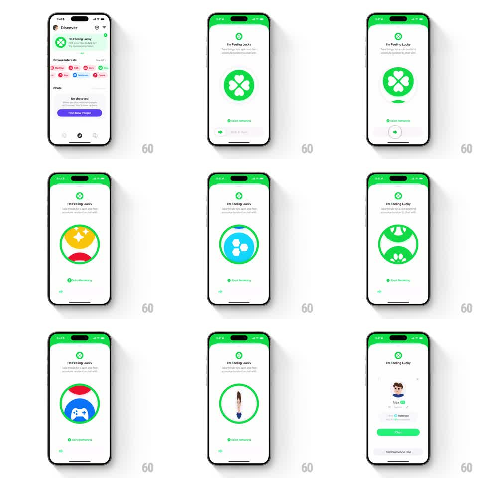

Media
Frame-by-frame

Rebuild this interaction 1:1: Honk's I'm Feeling Lucky - a slide-to-spin control launches a slot-machine wheel of category symbols that blurs, decelerates, and lands on a random match, revealing their avatar, interests, and a green Chat button.

Rebuild this interaction 1:1: Honk's I'm Feeling Lucky - a slide-to-spin control launches a slot-machine wheel of category symbols that blurs, decelerates, and lands on a random match, revealing their avatar, interests, and a green Chat button.
## Integration
Integration: stack-agnostic spec - springs given as stiffness/damping, timed motions as duration + curve; map every value to your framework and animation library of choice.
## Scene
"I'm Feeling Lucky" screen (green status tint): green clover logo, title, "Take things to a new level - find someone random to chat with" subcopy, "N Spins Remaining" with a clover icon, and a slide-to-spin pill at the bottom. During the spin, a large circular window shows category symbols scrolling vertically (clovers, stars, game controllers in green/yellow/red/blue). Result state: matched avatar, "Alex", interest tags ("Robotics"), green "Chat" button, "Find Someone Else".
## Motion spec
Pattern: slide-to-spin with slot-machine deceleration.
- The slider knob tracks the finger right (1:1); the track fills green behind it; past 75% it snaps to the end (spring ~320/22) and fires the spin; below 75% it springs back to start.
- Spin: the symbol wheel accelerates into a vertical blur (symbols streaking, motion blur ~8pt, 500ms ramp), holds top speed (~1s), then decelerates over ~1.2s with easing that visibly hunts (slight overshoot past the final symbol, then settle back 100ms).
- Landing: the final symbol locks in the window with a pop (scale 1.1 -> 1, 150ms) and a green flash ring (opacity pulse).
- Result: the symbol window morphs into the match's avatar (scale + crossfade, 300ms); name, tags, Chat and Find Someone Else stagger in below (translateY 12pt + fade, 80ms apart, 250ms).
## Calibration
- The blur must be directional (vertical) - horizontal blur breaks the slot illusion.
- Deceleration is the anticipation beat; never cut it short.
## Reduced motion
The wheel crossfades through 3 symbols (200ms each) to the result.
## Don't miss
- "Spins Remaining" decrements the moment the spin starts, not on landing.
- The slide pill's label sits inside the track ("Slide to Spin" with arrow).